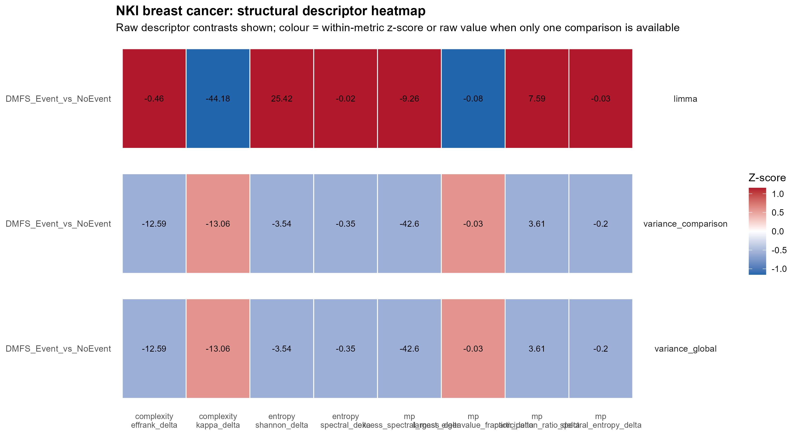
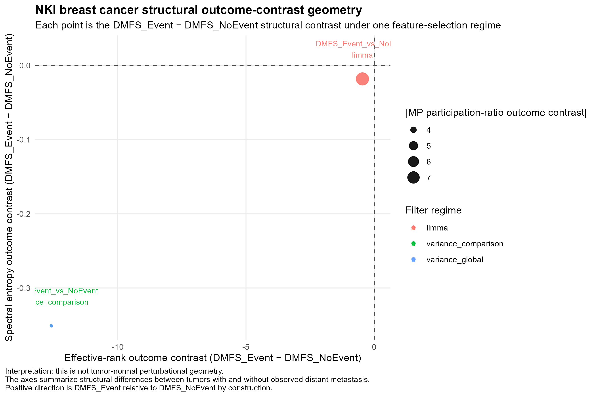
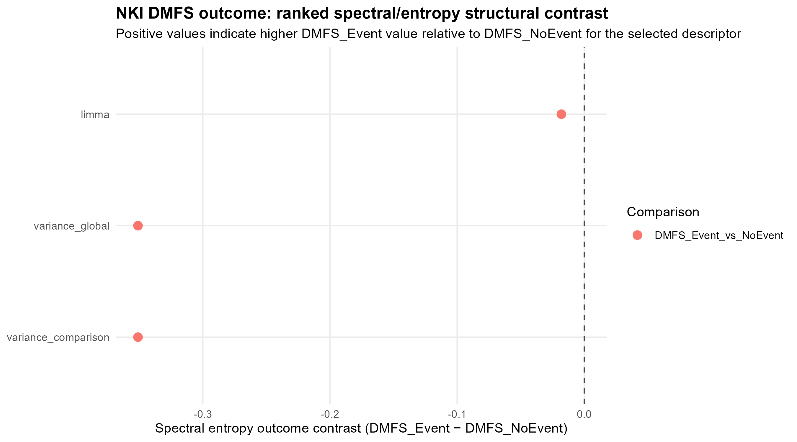
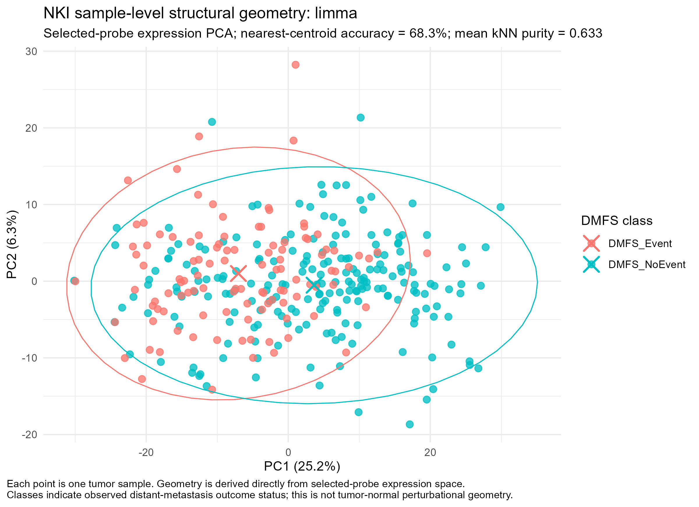
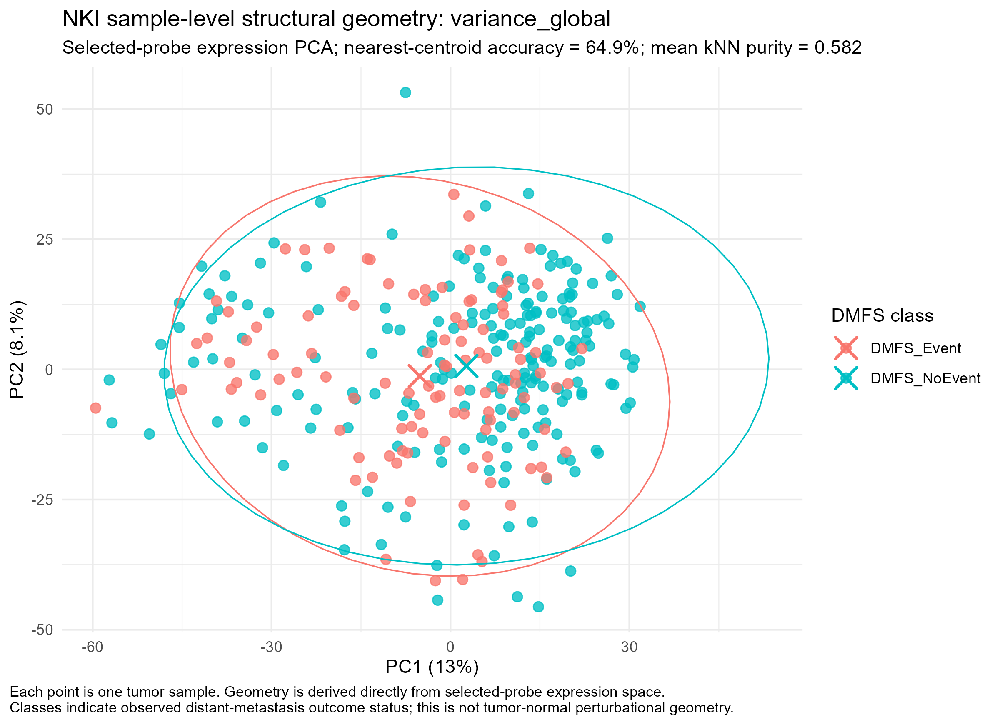
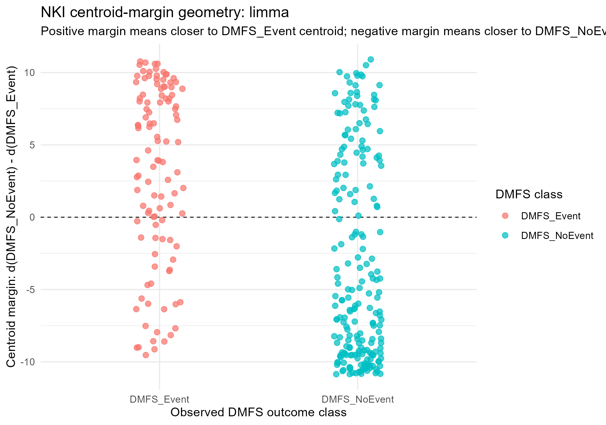
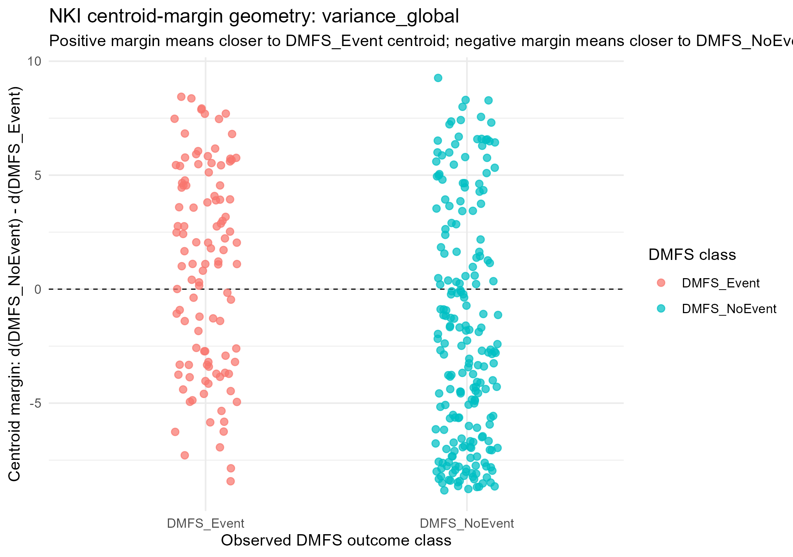

| filter_regime | rows |
|---|---|
| limma | 1 |
| variance_global | 1 |
20 Dutch Breast Cancer / NKI Structural Clinical Validation Study
NKI Phase IA: clinical outcome discrimination by transcriptomic structural geometry
21 Purpose of NKI Phase IA
The Golub leukemia validation phase tested whether the Structural Inference Framework could distinguish two malignant lineages without a normal-tissue reference. The Dutch breast cancer / NKI phase asks a different question.
Golub asked:
Can structural transcriptomic geometry distinguish biologically distinct malignant classes?
NKI Phase IA asks:
Can structural transcriptomic geometry distinguish clinically meaningful outcome states?
The purpose of Phase IA is therefore not survival modeling in the full prognostic sense. It is a clinical-discrimination validation step. The outcome axis is disease metastasis-free survival status, represented here as DMFS_Event versus DMFS_NoEvent.
22 Analytical convention
The NKI analysis treats DMFS_NoEvent as the reference outcome state and DMFS_Event as the target outcome state for directed structural contrasts:
\[ \Delta S = S_{\mathrm{DMFS\_Event}} - S_{\mathrm{DMFS\_NoEvent}} \]
This convention defines the sign of each descriptor contrast. It does not imply that DMFS_NoEvent is biologically normal. Both groups are breast tumors; they differ by clinical outcome state.
| Validation phase | Biological contrast | Framework question | Role in framework |
|---|---|---|---|
| Ramaswamy | Tumor vs normal | Can malignant perturbation be represented structurally? | Perturbational geometry |
| Golub | AML vs ALL | Can malignant lineages be structurally distinguished? | Class-discrimination geometry |
| NKI Phase IA | DMFS_Event vs DMFS_NoEvent | Can clinical outcome states be structurally distinguished? | Clinical relevance geometry |
23 Feature-space robustness
NKI Phase IA evaluates whether structural conclusions persist across substantially different feature-selection regimes. The intended contrast is between a supervised outcome-associated feature space and an unsupervised variance-driven feature space.
The central robustness question is:
Does the same clinical structural interpretation survive when the probe set is substantially perturbed?
This matters because a structural conclusion is more credible if it does not depend entirely on one differentially expressed probe list.
24 Class-level structural phenotype
The class-level structural phenotype table summarizes the DMFS_Event minus DMFS_NoEvent descriptor contrasts.
| Filter regime | EffRank Δ | Kappa Δ | Shannon Δ | Spectral entropy Δ | MP excess spectral mass Δ | MP leading-mode fraction Δ | MP participation ratio Δ | MP spectral entropy Δ |
|---|---|---|---|---|---|---|---|---|
| limma | -0.46 | -44.18 | 25.421 | -0.018 | -9.264 | -0.078 | 7.590 | -0.026 |
| variance_global | -12.59 | -13.06 | -3.535 | -0.351 | -42.597 | -0.032 | 3.607 | -0.202 |
The interpretive objective is to determine whether tumors associated with distant metastasis occupy a distinct structural transcriptomic state relative to tumors without distant metastasis.
25 Structural descriptor heatmap

The heatmap should be read as a compact grammar of descriptor polarity. Stable signs across feature-selection regimes support a robust clinical structural interpretation; sign reversals identify descriptors that are more feature-space sensitive.
26 Outcome structural geometry

This plot evaluates whether the outcome contrast occupies a coherent region of descriptor space. In Phase IA, the central claim is clinical discrimination, not yet independent survival prediction.
27 Ranked entropy/spectral contrast

The ranked contrast plot is useful for identifying which feature-selection regimes sharpen or attenuate the clinical structural signal.
28 Sample-level structural geometry
Class-level descriptors ask whether the two clinical outcome groups differ as aggregate structural states. Sample-level geometry asks whether individual tumors occupy outcome-associated neighborhoods.
The sample-level stage should summarize:
- PCA coordinates,
- distance to the
DMFS_NoEventcentroid, - distance to the
DMFS_Eventcentroid, - centroid margin,
- nearest-centroid assignment,
- k-nearest-neighbor outcome purity.
| Filter regime | Samples | Selected probes | PC1 variance | PC2 variance | Nearest-centroid accuracy | Mean kNN purity | Median absolute centroid margin |
|---|---|---|---|---|---|---|---|
| limma | 319 | 655 | 25.2% | 6.3% | 68.3% | 0.633 | 7.473 |
| variance_global | 319 | 3000 | 13.0% | 8.1% | 64.9% | 0.582 | 4.502 |
29 Sample-level PCA geometry


30 Centroid-margin geometry
The centroid margin is defined as:
\[ d(\mathrm{DMFS\_NoEvent\ centroid}) - d(\mathrm{DMFS\_Event\ centroid}) \]
Positive values indicate that a sample is closer to the DMFS_Event centroid. Negative values indicate that a sample is closer to the DMFS_NoEvent centroid.


31 Phase IA findings to report
NKI Phase IA should be read around four claims.
31.1 1. Clinical outcome states occupy partially distinct structural transcriptomic states
The primary test is whether DMFS_Event and DMFS_NoEvent tumors differ in structural descriptor space.
31.2 2. Structural discrimination persists under feature-space perturbation
The key robustness test is whether descriptor direction and interpretation persist when moving from the supervised limma feature space to the unsupervised variance_global feature space.
31.3 3. Sample-level geometry supports outcome-associated neighborhoods
The sample-level PCA, centroid-margin, and kNN-purity views ask whether individual tumors organize into outcome-associated regions rather than only showing aggregate descriptor differences.
31.4 4. Phase IA establishes clinical relevance, not final prognostic inference
Phase IA answers whether structural geometry distinguishes clinically meaningful outcome states. It does not yet establish time-to-event prognostic modeling, independent hazard, or multivariable clinical utility. Those questions belong to Phase IB.
32 Transition to Phase IB
Phase IA asks:
Can structural transcriptomic geometry distinguish clinically meaningful outcome states?
Phase IB should ask:
Does structural transcriptomic geometry carry prognostic information over survival time, risk gradients, and event timing?
Phase IB should therefore move from binary clinical discrimination to survival geometry, including structural risk scores, Cox modeling, Kaplan–Meier stratification, concordance, time-dependent performance, and comparison with clinical covariates where available.
33 Conclusion
NKI Phase IA is the clinical relevance bridge in the Structural Inference Framework. Ramaswamy established perturbational tumor-normal geometry. Golub established malignant class-discrimination geometry. NKI Phase IA tests whether structural transcriptomic descriptors distinguish tumors by clinical outcome state.
A successful Phase IA result justifies moving to Phase IB, where the framework should no longer ask only whether outcome groups differ. It should ask whether structural geometry behaves as a prognostic system.
34 Data provenance
| File | Role |
|---|---|
| tables/synthesis/structural_phenotype_wide.csv | Descriptor-level DMFS_Event-minus-DMFS_NoEvent structural contrasts |
| tables/synthesis/structural_phenotype_long.csv | Long-form descriptor table by engine and metric |
| tables/synthesis/structural_phenotype_summary.csv | Descriptor summary by engine and filter regime |
| tables/synthesis/sample_level_geometry/nki_sample_level_geometry_summary.csv | Sample-level PCA, centroid, and kNN summary |
| plots/synthesis/nki_structural_descriptor_heatmap.png | Descriptor heatmap |
| plots/synthesis/nki_dmfs_outcome_geometry.png | Outcome structural geometry |
| plots/synthesis/nki_spectral_entropy_dmfs_contrast_ranked.png | Ranked spectral/entropy contrast |
| plots/synthesis/sample_level_geometry/nki_sample_level_pca_limma.png | Sample-level PCA under limma |
| plots/synthesis/sample_level_geometry/nki_sample_level_pca_variance_global.png | Sample-level PCA under variance_global |
| plots/synthesis/sample_level_geometry/nki_sample_level_centroid_margin_limma.png | Centroid-margin geometry under limma |
| plots/synthesis/sample_level_geometry/nki_sample_level_centroid_margin_variance_global.png | Centroid-margin geometry under variance_global |